School of Electrical & Control Engineering · Tongmyong University
We turn cyber-physical research into engineering practice — coupling physical testing, simulation and AI into digital twins for marine and mechanical systems.

응용 사이버물리시스템 연구실
A cyber-physical system couples a physical asset with the computation that senses, models and controls it. ACPS Lab applies that idea to real engineering systems — ships, underwater vehicles, offshore and mechanical structures: experiments define the physics, simulation and physics-informed AI make it fast enough to use, and digital twins put it to work in the field.
Applied means our results leave the lab: funded projects with industry, research institutes and government, technology transfers and patent applications.
Sense. Material tests, water-tank acoustics and field sensors capture what the physical system actually does.
Model. Finite element, acoustic and electromagnetic simulations turn those data into validated physics models.
Learn. Physics-informed neural networks compress the models into surrogates fast enough for design decisions.
Twin. Digital twins close the loop, feeding live data back to monitor, control and operate marine systems.
How marine steels deform and tear under impact, cryogenic and hydrogen conditions, measured in tests and written into FE subroutines.
How hulls radiate and scatter sound underwater, and how bubble layers and mounts make them quieter.
How warships appear to radar, and where a radar-homing missile is most likely to hit.
Neural surrogates that respect physics and design codes, replacing hours of FE analysis in design optimisation.
Keeping vessels and structures synchronised with their virtual counterparts for monitoring and remote control.

Assistant Professor · Vice Director, RISE Center · Director, I-URP Center
We welcome undergraduate interns and M.S./Ph.D. students interested in structural mechanics, underwater acoustics, radar cross section, physics-informed AI and digital twins. Students work on funded industry and government projects and have received national awards.
Opportunities →